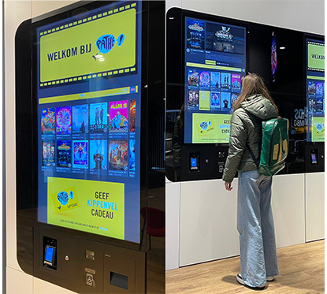

User Centred Design
Pathé
Groepsopdracht – 3 personen
Periode van het vak: 5 weken
De doelgroep
Spontane Pathé bezoekers, die de schermen gebruiken.
De opdracht
- Pathé wil zijn kaartverkoopmachine verbeteren/optimaliseren. Ze willen weten waarom bezoekers de machines gebruiken, in plaats van de andere opties: de balie en online.
- De grootste uitdaging die wij binnen deze opdracht hebben is om de gebruikersbehoefte in kaart te brengen.
Klantdoelen
De opdrachtgever Pathé wil met deze opdracht een betere interface kunnen bereiken op basis van ons onderzoek naar de doelgroep van de machine.
Proces
Om te beginnen zijn wij naar Pathé gegaan om een User Trip te doen. Hierin gaan wijzelf de schermen gebruiken om in kaart brengen wat ons opvalt. Daarna hebben wij een Deep Hanging Out uitgevoerd bij Pathé. Bij dit onderdeel ga je eerst onopvallend observeren wat een gebruiker doet bij de schermen en daarna hebben wij gevraagd of wij deze mensen mogen interviewen. Zo haalden wij er resultaten uit. Vervolgens is er nog wat deskresearch gedaan en Affinity Map gemaakt. Door Affinity Mapping help je onderliggende denkpatronen te ontdekken en soms om oude denkpatronen te doorbreken. Met deze informatie is er een Need Based Persona gemaakt en hebben wij de Needs & Wants in kaart kunnen brengen. Zo hebben wij de gebruikersbehoefte en -eisen kunnen bepalen.
Reflectie
Dit vak vond ik interessant om te doen, omdat je specifiek ging kijken naar wat de problemen waren zonder al in oplossingen te denken.